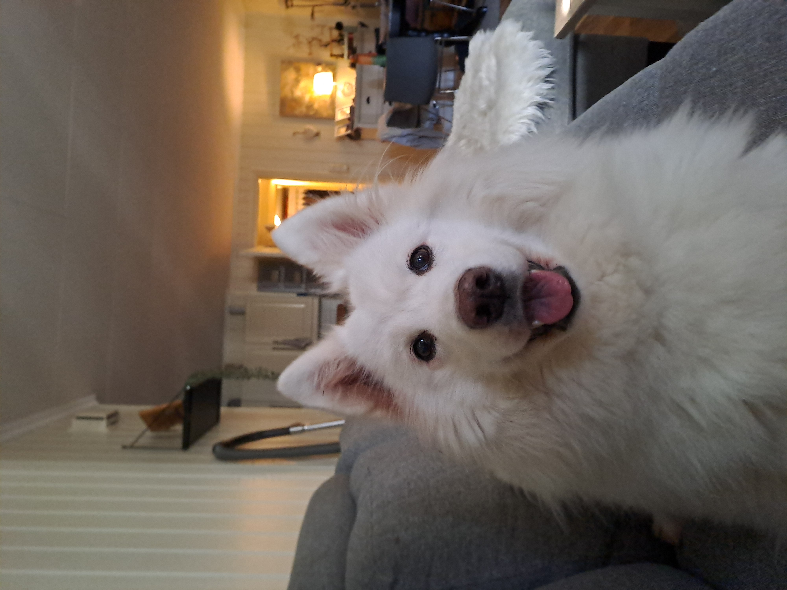

Welcome to my Website!
Hi! Im Ødegård. This is my small project website that i occasionally work on :)
I also have a discord server where you can easily contact me and talk to people! (click me)
I also have a discord server where you can easily contact me and talk to people! (click me)